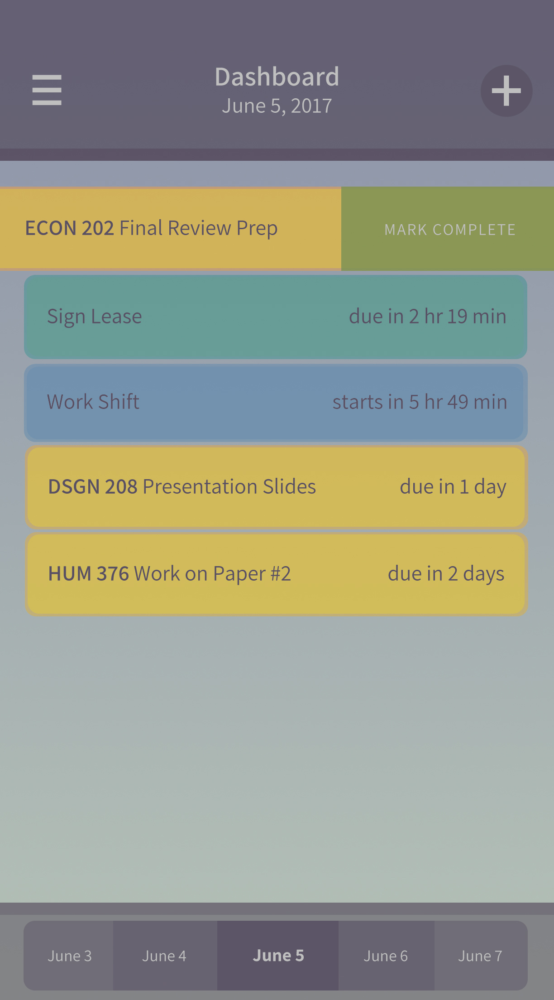
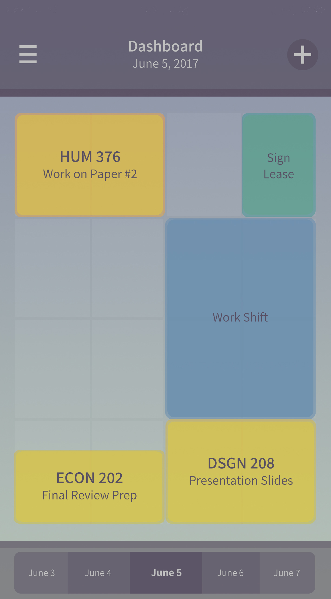
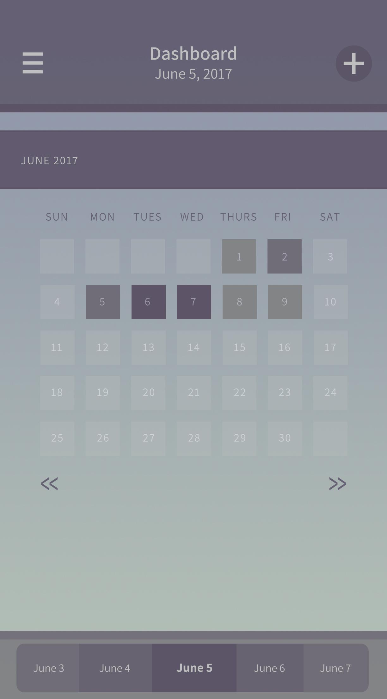

Catnip is a concept for a mobile app that aims to encourage Northwestern University students to better prioritize their daily tasks. Catnip features a unique primary display where tasks and assignments are represented as rectangles on a 4x4 grid.
TEAM: Allison Lu, Janus Kiong, Lexy Praeger, Leslie Zhang
User Testing
|
UI Mockups and Wireframes
|
“By week 5 or 6, many students quickly get overwhelmed even if they’ve felt fine week 2 or 3. This can be due to a combination of midterms, their academic workload, or study habits. It’s important to give them tools that can help them out before they’re struggling.”
—JANICE MEJIA, FIRST-YEAR ADVISOR
Students lack resources for how to adjust to rigorous university life, consequently becoming quickly overwhelmed with academic and extracurricular commitments by midterms.
Insufficient methods of time management can exacerbate stress, anxiety, hopelessness and frustration.
Some students used digital calendars like Google Calendar, but found that manually updating them was tedious and a chore in itself.
|  |  |  |
List View
|
Priority View
|
Calendar View
|
While Catnip anticipates to automatically pull course and assignment data from Canvas's API, the app also allows users to manually add and edit tasks.
The Add/Edit menu is activated by double-tapping on an existing task, or by tapping the + button in the top right corner of the dashboard.
Here users can input details such as date and duration, assign a color, mark the task as urgent and delete a task from the screen.
Making an app is harder than it seems! It was a great opportunity to dive into introductory UI design, and I'm still trying to learn the basics and improve.
The class this was for spanned over twenty weeks, and it was a challenge to stay focused and motivated.
Funnily enough, working on Catnip was an exercise in time management. I learned that there's definitely a fine line between being grounded in user testing and research and being bogged down.